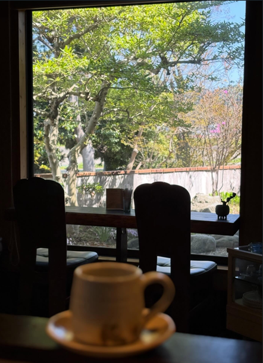

01. 自家焙煎コーヒー
豆から自家焙煎。一杯ずつハンドドリップで丁寧にお淹れします。

旅先で見つけたアンティークの額縁やカトラリー、真鍮のランプを少しずつ持ち寄って、この部屋はできています。金の唐草模様の壁紙に灯りがともると、時間がゆっくり流れ出します。
昼はコーヒーとスイーツの店として、夜はカクテルを楽しめるバーとして。庭の緑を眺めながら、思い思いの時間をお過ごしください。
メニューを見る →豆から自家焙煎。一杯ずつハンドドリップで丁寧にお淹れします。
ロールケーキやムースなど、仕込みから盛り付けまで手作業で。
額縁やカトラリー、真鍮のランプ。ひとつひとつに時間の重みがあるものを集めています。
店の窓の外には小さな庭があり、季節ごとに表情を変えます。バラが咲く春から、紅葉が灯りに照らされる秋まで。窓辺の席から庭を眺めながら過ごすひとときも、niko cafe barの時間のひとつです。